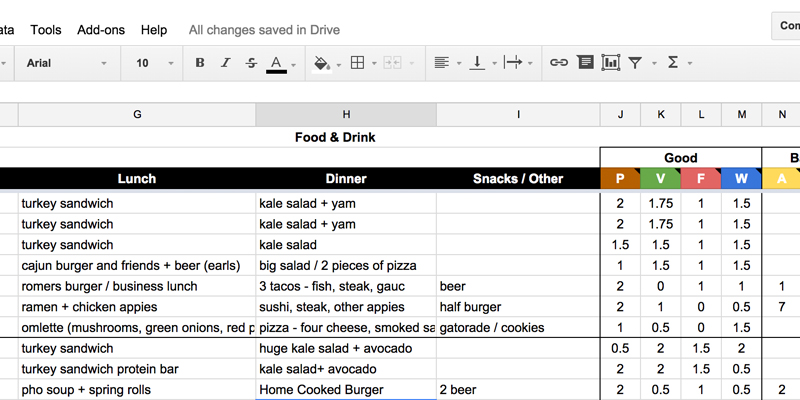
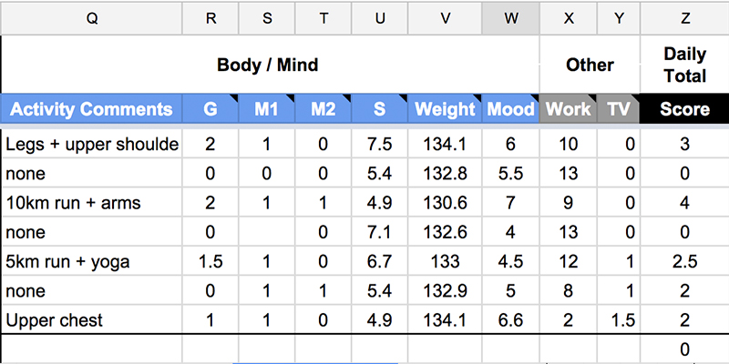
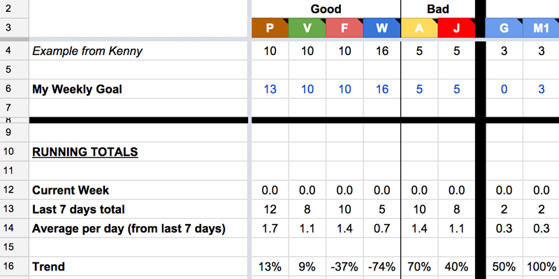
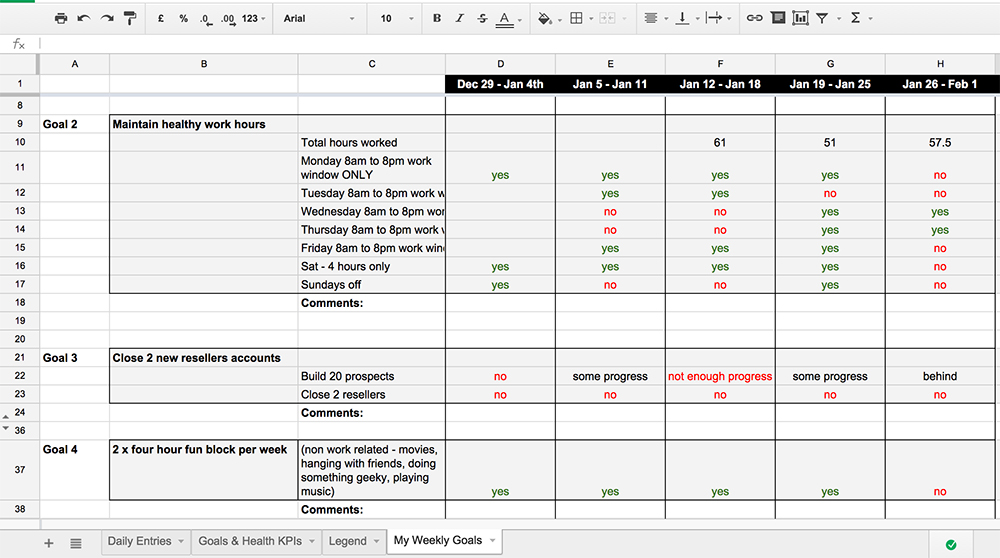

My Personal Health Tracker Template
February 10, 2015Are you healthy? What’s your greens and fruit count today? How about for the week? Do you maintain a healthy diet that includes ample exercise and sleep? Do you have a process to track this stuff on a daily basis? I didn’t.. so I made a spreadsheet tracker, and now i’m sharing it with you and the rest of the internets for free.
In this super long post, I’m sharing my Health Tracker Google Doc Template, the scoring logic, and some personal insights to help you live a healthier and well balanced life. This is far from perfect, but hopefully motivates someone to try it out for 30 days or take the template and improve the scoring system.
You don’t realize how well, or in my case how terrible your eating habits are until you view your weekly, monthly, or quarterly health score. We all go through rough patches, but prior to this tracking doc, I felt that I had a pretty good foundation of overall health. I play sports, sleep somewhat regularly, avoid drinking coffee or eating fast food like McDonalds, Tim Hortons, or Subway. I do have a sweet spot for gourmet burgers, but my eating habits are pretty good. It wasn’t until last summer where I became more focused around goal setting and goal tracking that I decided to track every detail of my health. It’s both fun and totally mortifying to share these numbers publicly, but here are some of my personal eating stats from the last 90 days:

Yes, far too many cheeseburgers. We all have our vices, a home cooked royale with cheese is mine. Also, 104 drinks isn’t that bad considering we had Christmas, New Years, i’m fundraising for my startup, and going through messy breakup.
I spent the first month focused around measurement. All of these numbers don’t mean much unless you have clearly defined goals and objectives. It’s hard to set goals without having a baseline. Internally, you’ll embellish your healthy habits and become mortified like I was. I guarantee it.
Daily Tracker - Tab 1
This is where I record my daily progress. I try to keep this tab open on one of my chrome windows. The first column breaks out the date, days left in the quarter, 3 meals of breakfast, lunch, dinner and an additional “other field” to capture snacks or junk food outside of those set mealtimes. It up to you on how detailed you want to get. I just wanted a quick way to capture what I was putting in my mouth. At the end of each day, I count the number of portions I had for each of the following groups:
- P = Protein
- V = Vegetables
- F = Fruit
- W = Water
- A = Alcohol
- J = Junk
You could easily add columns for other habits/food groups you want to track like smoking, protein shakes, coffee, or anything else you want to track. I’m not super scientific about it, here’s a few examples:
- 1 Orange = 1 fruit portion
- 1 Chicken breast = 1 protein portion
- Small Salad = 1 vegetable portion
- 500ml glass of water = 0.5 water
- A coffe crips chocolate bar = 1 junk point
When things were going well, i’d naturally love opening up the tracker and updating it with all of the magical goodness. When things weren’t going too well, i’d avoid the tracker like the plague. I added a line break every 7 days to represent a new work week and set a personal calendar reminder to ensure my reports and tracker was complete for the next work week. It’s a huge bummer trying to remember details of every meal after you’ve miss a few days. I ended up going through google calendars, emails, and bank receipts to figure out what/where I went just to ensure each meal is tracked.
I spent the first month focused around measurement including adding and removing columns that were important to my life. Building a regular routine to actually complete the tracker was very challenging. This is by far the hardest obstacle of all. I recommend setting daily google calendar alerts, or phone alarms, or adding a sticky notes to areas where you already have well defined routines. If you want to be more aggressive, add notes to your fridge door, light switches, or rally a friend to run the tracker with you and harass eachother if anyone slips. I still struggle with submitting the tracker every day, but improving every week.
Tracking Your Body And Mind
 In addition to tracking my eating habits, I introduced columns to track my body, mind, and overall happiness. Within the spreadsheet i’ve included some further details on how I track certain areas but I believe it’s pretty self explanatory:- G = Gym Activity Points
- AC = Activity Comments related to your work out
- M1 = Morning Meditation session 1
- M2 = Evening Meditation session 2
- S = # of hours you slept
- Weight = your weight recorded at same time everyday
- Work = # of hours you spent working
- TV = # of hours watching tv/movies/youtube
I’ve been experimenting with a daily score total but still needs work. I’ve included a basic formula to create a daily score but would encourage you to slide the formula based on your goals. For example, if drinking wine is something you enjoy and feel it’s part of a well balanced lifestyle, then you’ll need to update the formula to reflect that. Within the google doc, i’ve used the following formula:
> Daily Score Formula = ((P + V + F + W) - (A +J)) + (G + M1 + M2)
Goals and Trends - Tab 2

This is my health KPI (Key Performance Indicators) where I set goals and monitor my progress from 40k feet. I find this shit mind blowing. I can view how many gym sessions i’ve had in the last 30 days, how many beers i’ve had, average number of hours slept per day over the last 30 days, number of vegetables i’ve had, etc..
First step is to add your weekly goals. The first few weeks you wont have much information in here and formulas wont function properly. I’d recommend using the tracker for 2 weeks to build a baseline and go from there before settings goals. The rows are pretty self explanatory. You can see your weekly totals, averages per day over the last 7 days, the last 30 days, and the trend over the last 2 weeks.
My Weekly Goals - Tab 3
This is where I list my top 10 goals and display my weekly progress. I’ve added conditional formatting for the words yes and no, but this is great for creating an overall goal and breaking them down into actionable items. This isn’t for everyone, but thought i’d include it too.
Spreadsheet Links + Quick Instructions
Here’s the goods, let me know what hacks or improvements I should make and i’ll update the original google doc and include your name!
Personal Health Tracker Spreadsheet - Blank Template
Above template looking a bit bare? Check out my template to get an idea of what yours could look like. And yes, this public version has been edited =)
Instructions:
- Open link, navigate to menu bar, select “File, Make Copy”
- Call the spreadsheet doc something cool and fancy
- Go to Legend Tab, Enter your name and birthday
- Take a moment to process how many days you’ve been on earth. Crazy, I know!
- Navigate to Daily Entries Tab and familiarize yourself with the columns. Fill out todays date
- After a few weeks head over to the KPI tab, enter your weekly goals on row 6. I’ve included some basic examples, but the weekly goals are carried over a 7 day average, whereas weight should be a single number.
- If you have other goals, set them up within the My Weekly Goals tab
- Send me a tweet or comment below and let me know how your progress is going!
Thanks for everyone’s feedback on the blog post and spreadsheet. Shoutouts to my elephants. Please keep the feedback coming. I’m available to answer questions if you get stuck and i’ll totally update the google spreadsheet with any suggestions or formula improvements you have. Would love to hear your success stories, drop me a shoutout on the twitters or send me an email. Have fun and good luck.